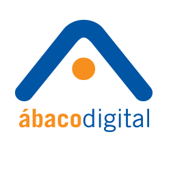

Teléfono
(55) 5424-0620
Teléfono
(55) 5424-0620
Acerca de Ábaco
Diseñadores de estrategias de marketing online, se enfocan en los objetivos de negocio, buscan la integración online – offline, proponemos las acciones a emprender y planteamos claramente cómo medir los resultados desde un inicio.
|  |
Abaco Digital Atraer, convertir y retener clientes es clave para cumplir los objetivos de tu negocio.
Apasionados en conocer a fondo a sus clientes, su entorno competitivo, sus audiencias estratégicas y, en general,
el ecosistema de negocios del que forman parte. |
|
Ábaco Metrics Especialistas en servicios de Consultoría Digital Analytics para apoyar estratégicamente la toma de
decisiones de marketing digital y optimizar los resultados de negocio de nuestros clientes. |
Preguntas frecuentes
- ¿Me puedo inscribir a cualquier módulo?
- Sí, siempre y cuando haya cupo y cuentes con los requisitos para ingresar.
- ¿Cuáles son los requisitos para certificarme en Google Adwords?
- La certificación de Google Adwords aplica una vez que hayas acreditado el módulo de Fundamentals más Search y/o Display. Adicionalmente, está la certificación en Video, para la cual, es necesario contar con las certificaciones de Fundamentals más Search y/o Display.
- ¿Cuáles son los requisitos para certificarme en Google Analytics?
- Haber cursado el módulo de Google Analytics I, Google Analytics II y acreditar el examen requerido.
- ¿El certificado que obtendré será otorgado por Google o por Ábaco Academy?
- La certificación de Google Adwords, Video y Google Analytics es proporcionada por Google directamente. Recibirás tu certificación por correo electrónico una vez que acredites los exámenes.
- ¿Cómo puedo conseguir un precio especial?
- Los precios especiales se obtienen con la inscripción de grupos de 5 ó más personas.
- ¿Cómo puedo pasar directo a Analytics 2?
- Para pasar a Analytics 2, tienes que realizar un Pretest en el que se evaluará el nivel de conocimientos de Analytics con el que cuentas.
- ¿El Pretest de Analytics tiene algún costo? ¿Cómo puedo aplicarlo?
- El Pretest no tiene costo alguno y se aplica en línea. Es necesario contestarlo antes de la segunda clase de Analytics 1.
- ¿Dónde son las clases?
- Las clases son en Urban Station. Dirección: Prolongación Molière 68, Polanco, Miguel Hidalgo, 11550 Ciudad de México, D.F.
- ¿Cómo puedo realizar el pago de inscripción a los cursos?
- Primero contáctanos, mandando un correo a info@abacoacademy.com o regístrate aquí. En seguida te enviaremos la ficha de pago necesaria. Posteriormente, debes realizar el pago y enviarnos el comprobante a info@abacoacademy.com
- ¿Debo tomar todos los cursos? O ¿puedo inscribirme a uno más avanzado?
- Tú eliges el o los cursos que quieras tomar. Para entrar a módulos más avanzados, como Search, Display, o Video, debes haber aprobado los exámenes necesarios para las certificaciones anteriores. En caso de quere ingresar a Analytics 2, debes realizar el Pretest online.
- ¿Qué tengo que llevar para la clase?
- Para la clase necesitarás laptop y muchas ganas de aprender. En la primera sesión de cada módulo se te facilitará pluma y cuaderno.
- Si no puedo comunicarme por teléfono con ustedes, ¿qué puedo hacer?
- En caso de no poder comunicarte con nosotros por teléfono, también puedes encontrarnos mandando un correo a info@abacoacademy.com
- ¿Qué puedo hacer si tengo problemas para registrarme en la página?
- Te pedirmos de favor que nos mandes un correo a info@abacoacademy.com, o si prefieres, puedes llamarnos al 54240620
- ¿Cómo sé si mi registro en línea se concretó?
- Si recibiste un mensaje de "Gracias" en el sitio al terminar tu registro, entonces fue exitoso y en breve te contactaremos. De otro modo, te pedimos de favor vuelvas a llenar el formulario o mandes un correo a info@abacoacademy.com
- ¿Pueden dar los cursos en mis instalaciones?
- Debes contar con un grupo de 20 personas que quieran tomar el curso para que podamos ir a dar el curso a tus instalaciones. Igualmente, podríamos buscar alguna opción que te convenga para que puedas tomar el curso. Te pedimos de favor, mandes un correo a info@abacoacademy.com con tus datos para acordarlo personalmente.
¿Dónde?
Urban Station
Prolongación Moliere 68.
Polanco, Miguel Hidalgo.
Ciudad de México, D.F. 11550
(55) 5424-0620
Certificaciones de Ábaco